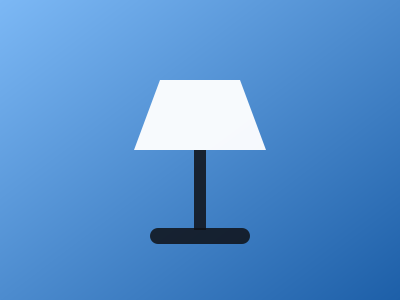

Designing with tokens
How a single file of custom properties keeps a whole product on brand.

How a single file of custom properties keeps a whole product on brand.
This card turns horizontal when it is at least 34rem wide, independent of the viewport.